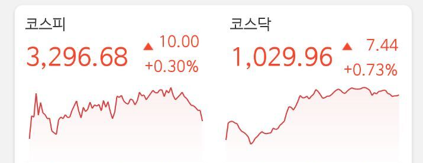

핫한뉴스 1
문단을 나눌때 영역을 나누고 싶을때 자주 사용하는것이 바로 수평선 그리기 HR태그입니다. 닫는 태그 없이 한번의 태그 사용으로 간단하게 수평선을 구현할 수 있어 많이들 사용하는 방법입니다. 수평선에 색을 입히거나 비율 수평선의 굵기까지 지정할 수 있습니다.
메인뉴스
속보 건강한 메시 사진 1
주목할 점은 그동안 한국TV에서 추천한 종목들의 수익률이다. 박셀바이오 67%, 우정바이오 42%,바이오톡스텍 23% 등 추천하는 종목마다 꾸준하게 수익을 이어가고 있는 한국TV이 무료로 추천주를 제공한다는 소식에 개인투자자들이 몰려들고 있다.
한국tv에서 활동하는 30여명의 베테랑 주식전문가가 각자의 주식카톡방에서 오늘의 추천주와 매수가, 매도가 외에도 오늘의 시황정보와 투자전략 등 알짜정보까지 무료로 제공하고 있다.
앞서 말한 추천주의 수익률에 추가적인 정보까지 무료로 받을 수 있다는 점에 회원들의 만족도도 높은 편이다. 실제로 연이은 수익행진에 한국TV 무료카톡방에는 회원들의 수익인증과 감사인사가 연이어 올라오고 있다.
오늘의 사진
오늘의 주식
